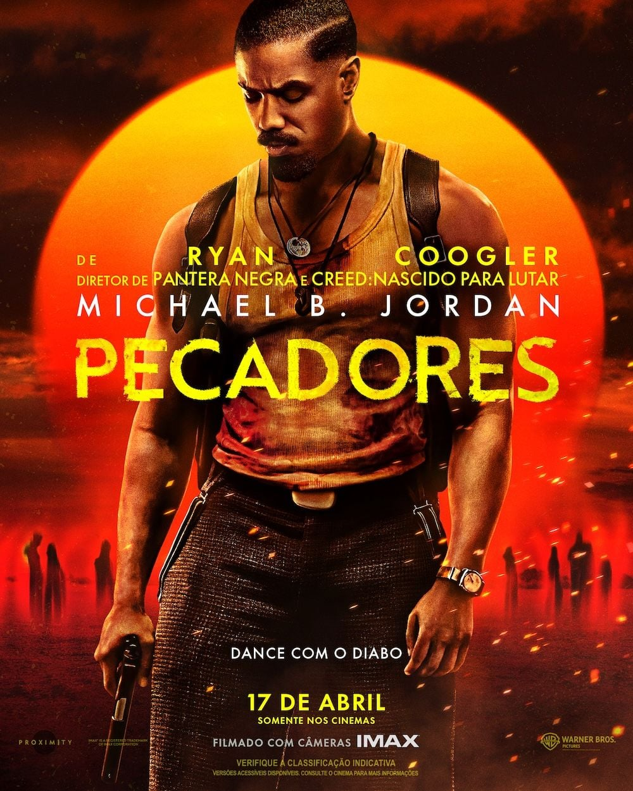
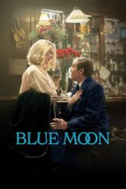
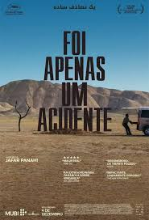

98th Annual Academy Awards
Melhor Roteiro Original
Conheça os candidatos à Premiação do Oscar 2026 por Melhor Roteiro Original.

Vencedor
Pecadores (Sinners)
Roteirista: Ryan Coogler.
A Trama: Ambientado no sul dos Estados Unidos durante a era de Jim Crow, o roteiro utiliza o horror sobrenatural para explorar o peso histórico do racismo e da culpa. Dois irmãos retornam à sua cidade natal para um recomeço, apenas para descobrir que um mal antigo (e muito real) os aguarda.
Destaque: A habilidade de Coogler em fundir o comentário social com o gênero de "monstro", criando diálogos que ecoam tradições orais e tensões teológicas.

Marty Supreme
Roteiristas: Josh Safdie e Ronald Bronstein.
A Trama: Embora inspirado livremente em figuras reais do pingue-pongue, o roteiro é uma criação original que mergulha na obsessão e na cultura de nicho da Nova York dos anos 50. É uma jornada de autodescoberta através da busca pela perfeição técnica e do estrelato improvável.
Destaque: O ritmo frenético e a linguagem crua, típica da colaboração Safdie-Bronstein, que transforma um esporte de mesa em um campo de batalha existencial.

Valor Sentimental (Sentimental Value)
Roteiristas: Joachim Trier e Eskil Vogt.
A Trama: Um drama íntimo sobre duas irmãs que precisam lidar com o reaparecimento do pai, um diretor de cinema em declínio, após a morte da mãe. O roteiro disseca como as memórias familiares são moldadas por perspectivas conflitantes.
Destaque: A precisão psicológica e a melancolia norueguesa. Trier e Vogt são mestres em escrever sobre a "vida não vivida" e as complexidades do luto moderno.

Blue Moon
Roteirista: Ethan Hawke.
A Trama: Um roteiro focado no encontro de personagens em uma única noite, explorando temas de arrependimento, música e a passagem do tempo. A narrativa utiliza a estrutura de "filme de conversa" para revelar camadas profundas de humanidade sob a luz do luar.
Destaque: O lirismo dos diálogos. Hawke, conhecido por sua sensibilidade literária, escreve cenas que parecem peças teatrais, focadas na vulnerabilidade e na conexão humana imediata.

Foi Apenas Um Acidente (C’était juste un accident)
Roteirista: Jafar Panahi
A Trama: Um thriller jurídico e psicológico que começa com um evento trágico e se desdobra em uma análise ácida sobre o sistema de justiça e os privilégios de classe na França. O roteiro foca na ambiguidade moral dos envolvidos.
Destaque: A estrutura não linear e os diálogos afiados que expõem as mentiras sociais. O texto é elogiado por não oferecer respostas fáceis, mantendo o público em dúvida sobre a natureza do "acidente" até o fim.